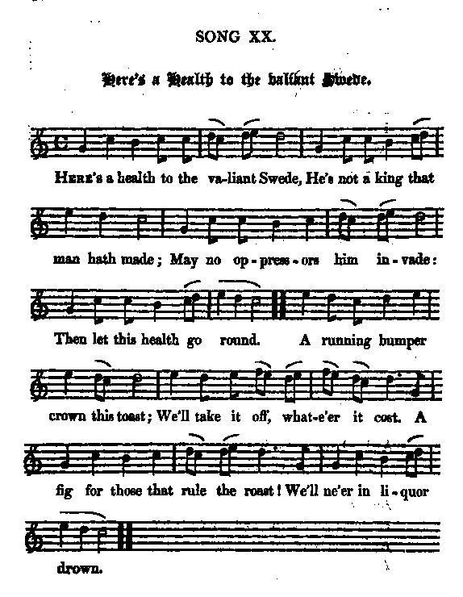
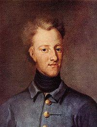
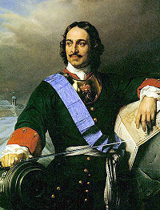

Here's a health to the valiant Swede
A la santé du roi des Suédois
A bacchanalian song
Tune - Mélodie"Here's a health to the valiant Swede de la mélodie"
from Hogg's "Jacobite Relics" 2nd Series N°20, 1821
Variant
from the "Village Opera":
Tunes sequenced by Christian Souchon

|
To the tune:
This old English air or march, "Charles of Sweden", probably related to "Charles the 12th King of Swedene's March" included in the "Gillespie Manuscript" of 1768, appears in early 18th century operas: - in Charles Coffey's ballad opera "The Devil to Pay" (1731) - "The Rival Milliners"; or, "The Humours of Covent Garden" - and as an untitled tune in "The Village Opera" (1729). There is a significantly differing version in Playford’s "Dancing Master" (countless editions between 1690 and 1728) . Source "The Fiddler's Companion" (cf. Links). More about "Bacchanalian songs": click here Another song on king Charles XII of Sweden: click here |
A propos de la mélodie:
Cet ancien air à chanter (ou marche) "Charles de Suède", probablement cousin de la "Marche de Charles XII, roi de Suède" du "manuscrit Gillespie" de 1768, apparaît au début du 18ème siècle dans les opéras: - l'"opéra-ballade" de Charles Coffey, "la Rançon du diable" (1731), - "les Meuniers rivaux" ou "les Sautes d'humeur de Covent Garden" - et, sans titre, dans "l'Opéra de village" (1729). Il existe une version très différente dans le "Maître à danser" de Playford (nombreuses éditions entre 1690 et 1726). Source "The Fiddler's Companion" (cf. Liens). Pour en savoir plus sur les "chants bachiques": cliquer ici Autre chant sur le roi Charles XII de Suède: cliquer ici |

|
HERE'S A HEALTH TO THE VALIANT SWEDE!
1. Here's a health to the valiant Swede, [1] He's not a king that man hath made; May no oppressors him invade: Then let this health go round. A running bumper crown this toast; We'll take it off, what-e'er it cost. A fig for those that rule the roast! We'll ne'er in liquor drown. 2. Here's a health to the royal seed, And to the king that's king indeed; If not ill ta'en, it's not ill said : Then let this toast go round. A running bumper, &c. 3. To all our injur'd friends in need, On this side and beyond the Tweed ; May each man have his own with speed: Then let this health go round. A running bumper, &c. 4. Here's a health to the mysterious Czar; [2] I hope he'll send us help from far, To end the work begun by Mar: Then let this health go round. A running bumper, &c. 5. May our affairs abroad succeed, And may the king return in speed ; May each usurper shake for dread: Let all these healths go round. A running bumper, &c. Source: "The Jacobite Relics of Scotland, being the Songs, Airs and Legends of the Adherents to the House of Stuart" collected by James Hogg, published in Edinburgh by William Blackwood in 1819. |
 Charles XII king of Sweden  Czar Peter I |
A LA SANTE DU ROI DES SUEDOIS
1. A la santé du fier roi des Suédois [1] Car lui, nul homme ne l'a fait roi! Pour que Dieu le garde de l'agression! Que toast et coupe tournent en rond. Passe la coupe de main en main! Quoi qu'il en coûte, buvons peu, mais buvons bien. Et en dépit de ceux qui font les lois Personne en ce nectar ne se noie! 2. A la santé des héritiers royaux! Au roi vrai qui n'est point un roi faux! Comprenne qui peut, comprenne qui veut! Voila le toast qui convient le mieux! Passe la coupe... 3. Puis aux victimes de l'adversité Outre-Tweed ou bien de ce côté Qu'à chacun soient reconnus tous ses droits C'est pour cela qu'ici chacun boit. Passe la coupe... 4. A la santé du Tzar mystérieux [2] - Il est loin, mais fera de son mieux Pour parfaire ce que Mar commença - L'un après l'autre ici chacun boit! Passe la coupe... 5. Que la cause prospère à l'étranger. Puisse notre roi bientôt rentrer; Passez la coupe! Que l'usurpateur Tremble de tous ses membres de peur! Passe la coupe... (Trad. Christian Souchon (c) 2010) |
|
[1] "Is a song of 1716, and alludes to a correspondence carried on between the Stuart party here and the celebrated
Charles XII. king of Sweden
(1682 - 1697 - 1718). George had endeavoured to appease that monarch, but he refused to listen to any overtures, until Bremen and Verden should be restored. These the elector of Hanover resolved to keep as a fair purchase ; and he engaged in a confederacy with the enemies of Charles, for the maintenance of that acquisition. Meanwhile his rupture with Sweden was extremely prejudicial to the commerce of England, and had well nigh entailed upon the kingdom another invasion, much more formidable than that which had so lately miscarried. The ministers of Sweden resident at London, Paris, and the Hague, maintained a correspondence with the disaffected subjects of Great Britain. A scheme was formed for the Swedish king's landing on this island with a considerable body of forces, where he should be joined by the malcontents of the United Kingdom. Charles relished the enterprise, which flattered his ambition and revenge.
[2] Nor was it disagreeable to the Czar of Moscow (Peter I: 1672 - 1682 - 1725), who resented the Elector's offer of joining the Swede against the Russians, provided he would ratify the cession of Bremen and Verden. King George, having received intimation of these intrigues, returned to England towards the end of January, and ordered a detachment of foot guards to secure the Swedish minister, with all his papers... About the same time baron Gortz, the Swedish residentiary in Holland, was seized, with his papers, at Arnheim, at the desire of King George, communicated to the states by Mr Leathes, his minister at the Hague. The baron owned he had projected the invasion, a design that was justified by the conduct of King George..." Source: Hogg's "Jacobite Relics", volume 2, page 300 |
[1] "Il s'agit d'un chant de 1716 et de la correspondance qu'entretinrent les partisans des Stuart avec le célèbre
Charles XII, roi de Suède
(1682 - 1697 - 1718). Georges I s'était efforcé d'apaiser ce monarque, mais celui-ci refusa d'écouter ses propositions tant que Brême et Verden sur l'Aller ne lui seraient pas restituées. L'électeur de Hanovre décida de conserver ces acquisitions régulières (achats au Danemark) et signa un pacte avec les ennemis de Charles pour en assurer la pérennité. Cette rupture avec la Suède portait préjudice au commerce de l'Angleterre et était bien près d'entrainer une invasion bien plus redoutable que celle qui avait échoué si récemment. Les ambassadeurs de Suède à Londres, Paris et La Haye échangèrent des correspondances avec les sujets britanniques en froid avec leur gouvernement. On échafauda un plan pour le débarquement sur l'île du roi de Suède à la tête de forces considérables auxquelles se joindraient les mécontents du Royaume Uni. L'idée d'assouvir ses ambitions et de prendre sa revanche n'était pas pour déplaire à Charles,
[2] Non plus qu'au Czar Pierre I (1672 - 1682 - 1725) qui en voulait à l'Electeur de Hanovre d'avoir proposé au Suédois une alliance contre les Russes, à condition qu'il ratifie la cession de Brême et de Verden. Le roi Georges mis au courant de ces manigances, revint en Angleterre vers la fin janvier et envoya un détachement de la garde s'emparer de l'ambassadeur de Suède et de tous ses documents...A peu près au même moment on arrêta à Arnhem l'ambassadeur de Suède en Hollande, le baron Goertz, faisant suite à une requête présentée par le roi Georges à La Haye. Le baron reconnut l'existence du projet d'invasion justifié par la conduite du roi Georges..." Source: Hogg's "Jacobite Relics", volume 2, page 300 |